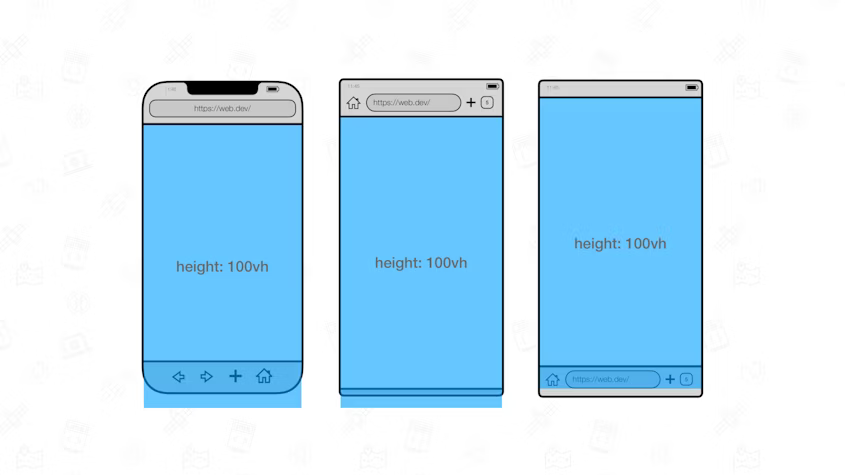
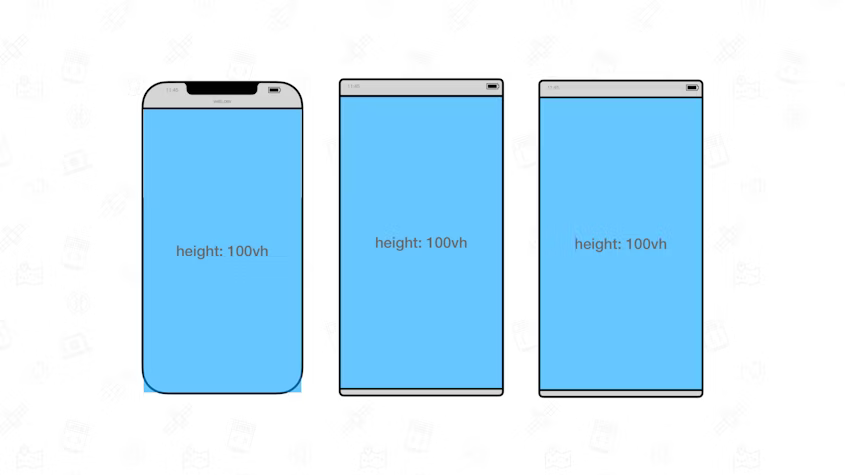
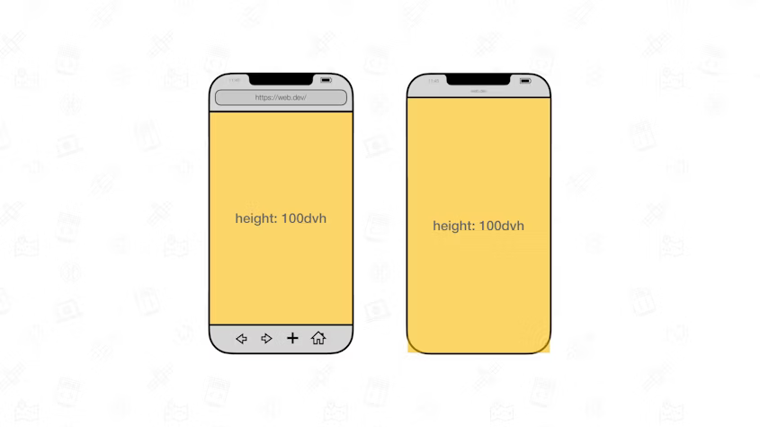
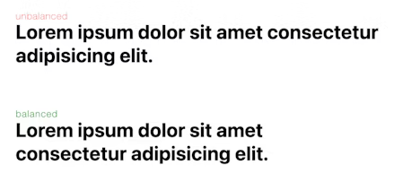
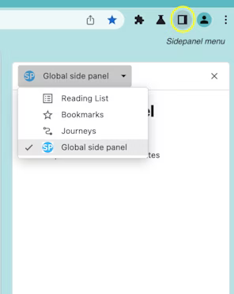

2023-06前端新活汇总
信源:
- https://web.dev/
- 前端食堂
- MDN Blog
- Google I/O
部分可用的内容
官方支持模态框
来自 Google I/O 2023
Chrome:37, Firefox: 98, Edge: 79, Safari: 15.4
原生支持的对话框元素
优势
- 与传统组件库实现相比: 内置支持了焦点管理, 选项卡最终, 多对话框堆叠, 快捷键关闭, 支持更多行为管理(背景是否可以滚动, 是否可以被聚焦)
- 与 Alert 相比: 可以自定义内部内容 (相当于一个 slot), 样式, 支持响应式
简易使用
const newDialog = (text) => { const dialogElem = document.createElement('dialog'); const textElem = document.createElement('p'); const backDialogElem = document.createElement('button'); const nextDialogElem = document.createElement('button'); textElem.innerText = text; backDialogElem.innerText = 'Back'; backDialogElem.addEventListener('click', () => dialogElem.close()); nextDialogElem.innerText = 'Addition'; nextDialogElem.addEventListener('click', () => newDialog(text + ' + ')); [textElem, backDialogElem, nextDialogElem].forEach((d) => dialogElem.append(d)); document.body.append(dialogElem); dialogElem.showModal(); };<button onclick="newDialog('Hello World')">show me</button>更多: https://web.dev/building-a-dialog-component/
更好用的 vh & vw
来自 Google I/O 2023
Chrome: 108, Firefox: 101, Edge: 108, Safari:15.4
vh与vw两个单位在移动端适配中存在问题, 移动端中的100 vh一般指工具栏收起后的视口高度, 当动态工具栏展开时,100 vh会超出视口
当工具栏收起时才可以正常表现

此次新增了三组单位分别表示小视口 (工具栏展开时) , 大视口 (工具栏收起) , 动态视口 (动态适配) 大小, 单位分别为
sv*,lv*,dv*. 在桌面端中四个单位都等于v*
也就是说目前 CSS 有 20 个相对视口的长度单位 (
vw,vh,vmin,vmax,vi,vb及其对应的dv*,lv*,sv*) p.s.vi表示内联方向的视口长度的1%, 例如在中英文网站中, 我们是横向书写, 因此vi = vw, 在古中文中, 书写方向竖向, 因此vi = vh.vb表示视口在块方向上的长度的1%, 也就是与vi恰好相反更多: https://web.dev/viewport-units/
transform 允许拆分
来自 Google I/O 2023
允许以如下方向写
transform.target { translate: 50% 0; rotate: 30deg; scale: 1.2; }而不是
.target { transform: translateX(50%) rotate(30deg) scale(1.2); }这可以解决大量动画手动计算问题, 例如我们需要完成以下动画

可以看到 scale, rotate, translate 在不同的时间点发生变化, 我们需要在某一个动画发生变化的时候定义所有动画的状态. 例如scale 在 5% 的时候运动发生了变化, rotate 在 10% 的时候发生了变化, 我们就要分别定义 5%, 10% 的时候所有动画的状态, 线性变化还好, 如果 rotate 是做了一个非线性动画, 那么我们在 5% 变更 scale 的时候就要手动计算 5% rotate 的状态, 代码为
@keyframes anim { 0% { transform: translateX(0%); } 5% { transform: translateX(5%) rotate(90deg) scale(1.2); } 10% { transform: translateX(10%) rotate(180deg) scale(1.2); } 90% { transform: translateX(90%) rotate(180deg) scale(1.2); } 95% { transform: translateX(95%) rotate(270deg) scale(1.2); } 100% { transform: translateX(100%) rotate(360deg); } }有了分开写的 feature, 我们就可以这样定义动画
@keyframes anim { 0% { translate: 0% 0; } 100% { translate: 100% 0; } 0%, 100% { scale: 1; } 5%, 95% { scale: 1.2; } 0% { rotate: 0deg; } 10%, 90% { rotate: 180deg; } 100% { rotate: 360deg; } }甚至更加清晰的写成这样
@keyframes move { 0% { translate: 0% 0; } 100% { translate: 100% 0; } } @keyframes scale { 0%, 100% { scale: 1; } 5%, 95% { scale: 1.2; } } @keyframes rotate { 0% { rotate: 0deg; } 10%, 90% { rotate: 180deg; } 100% { rotate: 360deg; } } .target { animation: move 2s, scale 2s, rotate 2s; animation-fill-mode: forwards; }更多: https://web.dev/css-individual-transform-properties/
简易的深克隆
来自 Google I/O 2023
Chrome: 98, Firefox: 94, Edge: 98, Safari: 15.4
支持对象, 循环引用, getter 的深拷贝, 不支持函数,
setter,Symbol可以把他当作
JSON.parse(JSON.stringify())的替代品简易测试
var test = { name: 'test', obj: {inner: 'test'}, arr: [1,2,3], _self: null, get getter(){return 'ok'}, set setter(val){console.log(`set for ${this.name}.setter as ${val}`)}, bigInt: BigInt(123), [Symbol.for('test')]: 'test', // 以下为不可被复制的属性, 复制会报错 // symbol: Symbol.for('test'), // func(){console.log('test')}, } test._self = test const res = structuredClone(test) res.name = 'res' console.log(res._self === res) // true console.log(res.obj === test.obj) // false console.log(res.arr === test.arr) // false console.log(res.bigInt) // 123n // Symbol 属性不复制但不报错 console.log(test[Symbol.for('test')]) // test console.log(res[Symbol.for('test')]) // undefined // setter 不复制不报错, 但是 getter 可以... console.log(res.getter) // 输出 ok console.log(test.setter = 'ok') // 输出 set for test.setter as ok console.log(res.setter = 'ok') // 没有输出更多: https://developer.mozilla.org/zh-CN/docs/Web/API/structuredClone
:focus-visible 属性
来自 Google I/O 2023
Chrome: 86, Firefox: 85, Edge: 86, Safari: 15.4
与
:focus类似的伪类, 两者区别是:focus：当元素获得焦点时，无论是通过键盘还是鼠标，都会应用:focus伪类的样式。这对于视觉反馈和可访问性都是有用的。然而，对于鼠标和触摸屏用户来说，:focus的样式可能会干扰视觉体验，因为它们通常不需要通过显示的焦点来导航。:focus-visible：只有当元素通过键盘获得焦点时，才会应用:focus-visible伪类的样式。这使得开发者可以为键盘导航创建专门的样式，而不干扰鼠标或触摸屏用户的体验。这是一种改善可访问性的方式，因为它允许开发者为那些依赖键盘导航的用户（例如视障用户或只使用键盘的用户）提供更清晰的视觉反馈。
流式 Fetch
来自 Google I/O 2023
Chrome: 105, Firefox: 110, Edge: 105, Safari: NA
支持流式通信后, 我们可以在一次请求中边接收数据边处理数据, 而不需要先完成数据下载再处理数据. 例如当媒体网站在请求一个视频的时候其可以直接请求整个视频文件, 边下载边为用户展示, 而不是分段请求视频, 存放在 blob 中处理再展示.
以下是一个慢慢请求的例子
function wait(milliseconds) { return new Promise(resolve => setTimeout(resolve, milliseconds)); } const stream = new ReadableStream({ async start(controller) { await wait(1000); controller.enqueue('This '); await wait(1000); controller.enqueue('is '); await wait(1000); controller.enqueue('a '); await wait(1000); controller.enqueue('slow '); await wait(1000); controller.enqueue('request.'); controller.close(); }, }).pipeThrough(new TextEncoderStream()); fetch(url, { method: 'POST', headers: {'Content-Type': 'text/plain'}, body: stream, duplex: 'half', });更多: https://developer.chrome.com/articles/fetch-streaming-requests/
新的 CSS 颜色表示法
来自 web.dev
Chrome: 111, Firefox: 113, Edge: 111, Safari: 16.2
传统的写法:
rgb,hsl,hwb,lch,lab,oklch,oklab例如background: rgb(31 120 50); /*注意一下这个最新的写法捏*/ background: rgb(255 122 127 / 80%);color函数: 可以直接使用color函数指定色彩空间与四个色值, 例如.valid-css-color-function-colors { --srgb: color(srgb 1 1 1); --srgb-linear: color(srgb-linear 100% 100% 100% / 50%); --display-p3: color(display-p3 1 1 1); --rec2020: color(rec2020 0 0 0); --a98-rgb: color(a98-rgb 1 1 1 / 25%); --prophoto: color(prophoto-rgb 0% 0% 0%); --xyz: color(xyz 1 1 1); }更多: https://developer.mozilla.org/en-US/docs/Web/CSS/color_value/color
color-mix函数: 可以实现混色, 语法color-mix(in colorspace, color[ p1], color[ p2]). 其中in是语法标记, 必须写上,colorspace为颜色空间, 接着是两个被混合的颜色,p1,p2, 是该颜色所占比例, 都省略则按50%, 50%计, 省略一个则根据另一个推导, 均没有省略但两值和不为100%则加权平均例如: 以下表示 25% 的
#34c9eb与 75% 的#fff混合li:nth-child(2) { background-color: color-mix(in srgb, #34c9eb 25%, white); }更多: https://developer.mozilla.org/en-US/docs/Web/CSS/color_value/color-mix
WebGPU
来自 web.dev
Chrome: 113, Firefox: NA, Edge: 113, Safari: NA
内容很多, 请参考: https://developer.chrome.com/blog/webgpu-release/
Cookie First-Party Sets
来自 web.dev
Chrome: 80, Firefox: 86, Edge: 86, Safari: 15
从 Chrome 115 起默认情况下, 没有 SameSite 的 Cookie 被视为 Lax, 没有 Secure 的 SameSite=none 的 cookie 会被拒绝
text-wrap: balance 属性
来自 web.dev
Chrome: 114, Firefox: NA, Edge: 114, Safari: NA
使用该属性可以让浏览器根据育种优化文本换行, 使其更加平衡美观

这个属性可能会增加文本行数, 仅建议在标题中开启, 同时该属性与 white-space 冲突. 建议写成
h1, h2, h3, h4, h5, h6, blockquote {
white-space: unset;
text-wrap: balance;
}更多: https://developer.chrome.com/blog/css-text-wrap-balance/
官方支持的弹窗 popover API
来自 web.dev
Chrome: 114, Firefox: NA, Edge: 114, Safari: NA
popover API 支持在页面中展示一个弹窗 DOM, 支持配置以下特性
- 在顶层显示, 而不需要配置
z-index - 背景变黑, 禁用与非弹窗区域交互, 禁用焦点
- 默认焦点管理
- 绑定关闭快捷键
- 自定义样式
- [未来支持] 弹出消失动画
- [未来支持] 锚定弹出位置
- 在顶层显示, 而不需要配置
与组件库相比支持了焦点管理, 锚点弹出, 快捷键绑定
简易使用
<button popovertarget="my-popover"> Open Popover </button> <div id="my-popover" popover> <p>I am a popover with more information.<p> </div>更多: https://developer.chrome.com/blog/introducing-popover-api
感觉未来 HTML 会越来越强, 直到取代组件库, 未来的组件库会不会直接变成一个可配置的 CSS 文件?
<image> content 多样化
来自: MDN
content 是 CSS 中为(伪)元素写入内容的 Key, 除了写入文字, 他还支持写入图片, 渐变色, CSS 计数器函数, 引用, (更多使用参考 MDN)
在 Chrome 113 中与 FireFox 113 中, 我们可以为 content 写入渐变色与使用 img-set 的图片, 例如
<div id="replaced">Mozilla</div>#replaced {
content: linear-gradient(purple, yellow);
}此处的 Mozilla 会被一个渐变色色块取代
<div id="replaced">Mozilla</div>#replaced {
content: image-set(
"1x.png" 1x,
"2x.png" 2x
);
}此处我们可以为替换物指定 1x 与 2x 图
更好的全屏按键绑定
来自 Chrome Developers
传统的按下 ESC 退出全屏可能会与其他快捷键冲突, 在新特性中, 我们可以将按下 ESC 锁住, 让他完成其他快捷任务, 此时用户需要长按 ESC 才能推出全屏
新的 Web Animation
来自 Google I/O
- View Transitions API: 原生支持使用纯 CSS 实现页面(路由)切换时的过渡动画, 使路由切换更像是一个页面中的行为, 而不是页面刷新
- Scroll-driven Animations: 通过定义时间轴的方法实现了讲容器滚动与 CSS 属性在纯 CSS 层面绑定. 使用案例参考
- linear(): 更简洁的 CSS 线性缓动函数定义方法
新的 Chrome 扩展
来自 Google I/O
优化了空闲终止检测算法
新增 background 的 offscreen API
增强 Web Request APIs 的安全性
新的扩展管理菜单提供了更细粒度的扩展工作范围控制(23年年底上线)
新增 side panel API. 允许扩展常驻侧边栏

使用 Chrome DevTools 调试表单与自动填充
来自 Google I/O
Google 自动填充的原理
- 如果 Chrome 识别到了要填写内容的语义 (姓名, 邮箱, 银行卡信息, 位置信息), Chrome 会直接调用用户存储的个人信息 (如 Google Pay 绑定的银行卡, Google 中存储的位置) 填充表单. 语义识别参考: MDN
- 如果识别失败, 则会以表单的
name属性为 key 记住用户填写的信息, 之后根据name属性为用户提供书写建议.
给开发者的建议
- 用上自动填充 > 不用自动填充 > 写错填充字段
- 针对敏感信息采用
iframe包裹 - 自动填充仅用于填充客观信息, 不要用于填充个性化信息 (如产品订阅时间, 验证码), 对于个性化信息, 可以采用随机的
name防止被 Chrome 记住 (如:verify233)
未来的变化
- 针对触屏交互优化
- console 中自动警告不规范的表单写法与无法自动填充的原因
- 开辟一个详细解释自动填充工作流程的 DevTool 选项卡
FireFox 114 发布
首次支持
:lang()伪类选择器/* Matches nl and de */ :lang("nl", "de") { color: green; }SVG 支持
crossorigin属性支持 WebTransport API, 这是一个升级版的 ws, 其基于 HTTP/3, 通过 UDP 传输数据因此具有更高的性能, 更低的延迟, 更好的网络切换和更灵活的数据传输模式
优点：
- 避免了队头阻塞的问题
- 减少了安全握手所需的往返次数
- 支持多个流, 单向流和乱序交付, 提高了传输效率
- 支持不可靠的数据报传输, 适用于对实时性要求高的场景, 如游戏或音视频通信
- 支持在不同网络之间保持连接 ID 不变, 实现无缝切换
工具
检测支持本浏览器 CSS 支持新的网站
来自前端食堂
SupportsCSS.dev
虽然我不知道这东西有啥用
谷歌发布了一款扩展程序安装模拟器
来自 GoogleChromeLabs
这款工具可以用来模拟扩展程序通过不同途径安装与更新时与用户交互的流程(包括权限授予)
实验性内容
TypeScript 5.2 前瞻内容
来自前端食堂
using关键字using关键字可以在一个带有Symbol.dispose函数的对象被回收时执行函数. 以下是使用与不使用using完成文件句柄的例子不使用
usingimport { open } from "node:fs/promises"; let filehandle; try { filehandle = await open("thefile.txt", "r"); } finally { await filehandle?.close(); }使用
usingimport { open } from "node:fs/promises"; const getFileHandle = async (path: string) => { const filehandle = await open(path, "r"); return { filehandle, [Symbol.asyncDispose]: async () => { await filehandle.close(); }, }; }; { await using file = getFileHandle("thefile.txt"); // Do stuff with file.filehandle } // Automatically disposed!
引入类型占位符, 并运行 TS 动态推断类型而不是使用默认值 (相当于解决了类型缩窄问题)
// The underscores tell TypeScript to infer those type arguments! func<string, _, _>();
of <selector> 选择器
来自: MDN
of <selector> 选择器以选择匹配给定选择器的所有元素的子孙元素. 它类似于后代组合器 (空格)，但是它可以使用伪类和伪元素来过滤匹配的元素
与后代选择器的相似之处
li of :is(ul, ol): 匹配所有位于<ul>或<ol>元素内的<li>元素. 与ul li, ol li作用相同与后代选择器的不同之处
div of p::first-child匹配所有位于<p>元素内的第一个子元素的<div>元素. 后代选择器无法实现
实验性的 prefers-reduced-transparency 媒体查询
来自: MDN
FireFox 113 引入了一个实验性的媒体查询, 该查询可以检测用户是否设置了减少透明图层的偏好设置, 开启该设置有助于提升页面对比度与可读性, 此后, 开发者也可以根据该媒体查询的结果决定是否手动增强对比度, 例如:
.translucent {
opacity: 0.4;
}
/* 如果用户希望提高对比度, 那么我开发者就再帮他一把 */
@media (prefers-reduced-transparency) {
.translucent {
opacity: 0.8;
}
}CSS ray() 的新属性
来自 MDN
该函数在 CSS 中可以定义一个射线. 可以用于定义一些运动路径, 如 offset-path: ray(120deg sides contain);
文章
https://mp.weixin.qq.com/s/TFxQSwOLQJWBC-ErWaHS9Q
https://www.builder.io/blog/hydration-tree-resumability-map
https://chriscoyier.net/2023/06/06/modern-css-in-real-life/
https://mp.weixin.qq.com/s/sfbQUFzhJzYWGdfLh0yIzA
https://mp.weixin.qq.com/s/b5RJ4ZArlbzOmM3Zz1VDhg